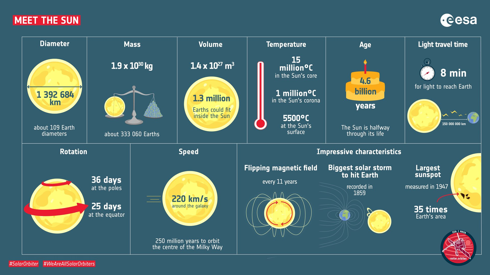
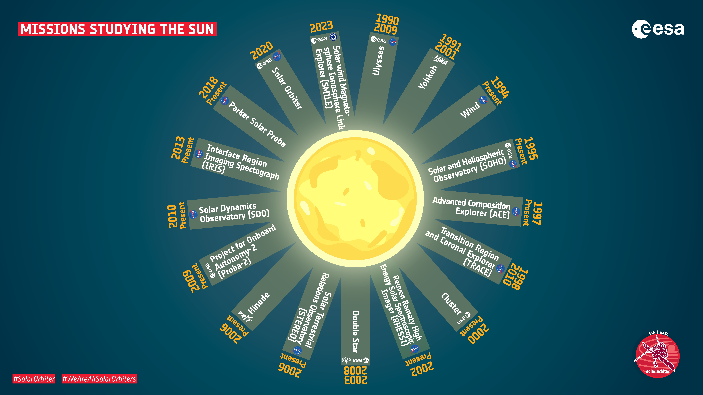

O Sol é uma 𝐛𝐨𝐥𝐚 𝐝𝐞 𝐩𝐥𝐚𝐬𝐦𝐚 com 𝐜𝐚𝐦𝐩𝐨𝐬 𝐦𝐚𝐠𝐧é𝐭𝐢𝐜𝐨𝐬 que entram e saem da sua superfície. Nas regiões onde os campos magnéticos atravessam a superfície do Sol, ou 𝐟𝐨𝐭𝐨𝐬𝐟𝐞𝐫𝐚, o movimento de convecção é inibido.
É por este motivo que essas regiões parecem mais escuras e recebem o nome de 𝐦𝐚𝐧𝐜𝐡𝐚𝐬 𝐬𝐨𝐥𝐚𝐫𝐞𝐬.

Por vezes, as 𝐥𝐢𝐧𝐡𝐚𝐬 𝐝𝐨 𝐜𝐚𝐦𝐩𝐨 𝐦𝐚𝐠𝐧é𝐭𝐢𝐜𝐨 torcem-se e rompem-se, libertando matéria para o Sistema Solar. Estes fenómenos recebem o nome de 𝐞𝐣𝐞çõ𝐞𝐬 𝐝𝐞 𝐦𝐚𝐬𝐬𝐚 𝐜𝐨𝐫𝐨𝐧𝐚𝐥, ou 𝐂𝐌𝐄.
O Sol é estudado a partir da 𝐓𝐞𝐫𝐫𝐚, por exemplo com o 𝐏𝐨𝐄𝐓 — 𝐏𝐚𝐫𝐚𝐧𝐚𝐥 𝐬𝐨𝐥𝐚𝐫 𝐄𝐒𝐏𝐑𝐄𝐒𝐒𝐎 𝐓𝐞𝐥𝐞𝐬𝐜𝐨𝐩𝐞 —, e também a partir do 𝐄𝐬𝐩𝐚ç𝐨, através de missões como 𝐒𝐎𝐇𝐎, 𝐒𝐨𝐥𝐚𝐫 𝐎𝐫𝐛𝐢𝐭𝐞𝐫 e 𝐒𝐃𝐎.
